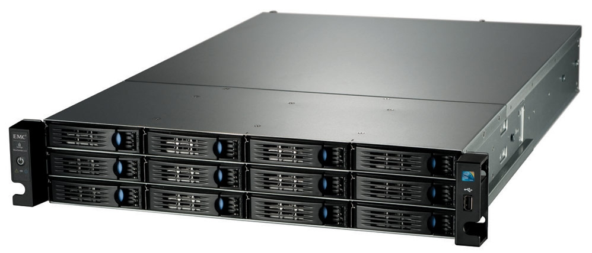
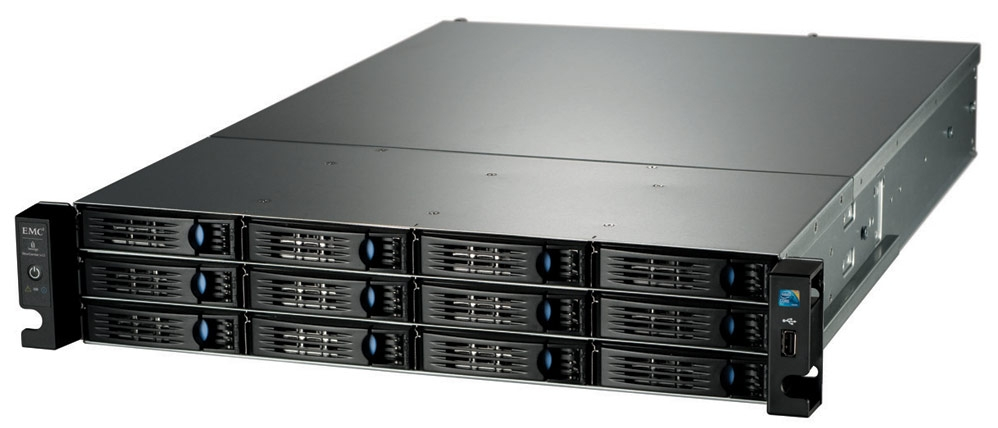
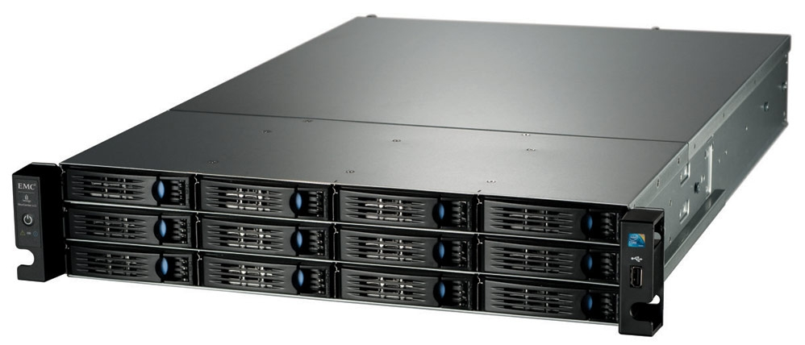

Exemplo de Servidores
 


Um guia para inciantes!
Todos os serviços de computação em nuvem funcionam de forma um pouco diferente, dependendo do provedor. Mas muitos fornecem um painel amigável baseado em navegador que facilita aos profissionais de TI e desenvolvedores solicitarem recursos e gerenciar suas contas. Alguns recursos de computação em nuvem também são criados para funcionar com APIs REST e uma CLI (interface de linha de comando), fornecendo diversas opções aos desenvolvedores.O armazenamento de dados é feito em serviços que poderão ser acessados de qualquer lugar do mundo, a qualquer hora, não havendo necessidade de instalação de programas ou de armazenar dados. O acesso a programas, serviços e arquivos é remoto, através da Internet, daí a alusão à nuvem. O uso desse modelo (ambiente) é mais viável do que o uso de unidades físicas.
A computação em nuvem elimina o gasto capital de compra de hardware, software, instalação e execução de datacenters locais, racks de servidores, eletricidade com disponibilidade permanente para energia e resfriamento, especialistas de TI para gerenciamento da infraestrutura. Isso pode impulsionar seus negócios.
A maior parte dos serviços de computação em nuvem é fornecida por auto-serviço e sob demanda, para que até grandes quantidades de recursos de computação possam ser provisionadas em minutos, normalmente com apenas alguns cliques, fornecendo às empresas muita flexibilidade e aliviando a pressão do planejamento de capacidade.
Os benefícios dos serviços de computação em nuvem incluem a capacidade de dimensionamento elástico. Em termos de nuvem, isso significa fornecer a quantidade correta de recursos de TI, por exemplo, mais ou menos energia de computação, armazenamento e largura de banda, quando necessário e no local geográfico correto.
Os maiores serviços de computação em nuvem são executados em uma rede mundial de datacenters seguros, que são atualizados regularmente com a mais recente geração de hardware de computação rápido e eficiente. Isso oferece diversos benefícios em um único datacenter corporativo, incluindo latência de rede reduzida para aplicativos e mais economia de escalonamento.

A infraestrutura como um serviço, às vezes abreviada como IaaS, contém os componentes básicos da TI em nuvem e, geralmente, dá acesso (virtual ou no hardware dedicado) a recursos de rede e computadores, como também espaço para o armazenamento de dados. A infraestrutura como um serviço oferece a você o mais alto nível de flexibilidade e controle de gerenciamento sobre os seus recursos de TI e se assemelha bastante aos recursos de TI atuais com os quais muitos departamentos de TI e desenvolvedores estão familiarizados hoje em dia.
Com as plataformas como um serviço, as empresas não precisam mais gerenciar a infraestrutura subjacente (geralmente, hardware e sistemas operacionais), permitindo que você se concentre na implantação e no gerenciamento das suas aplicações. Isso o ajuda a tornar-se mais eficiente, pois elimina as suas preocupações com aquisição de recursos, planejamento de capacidade, manutenção de software, patching ou qualquer outro tipo de trabalho pesado semelhante envolvido na execução da sua aplicação.
O software como um serviço oferece um produto completo, executado e gerenciado pelo provedor de serviços. Na maioria dos casos, as pessoas que se referem ao software como um serviço estão se referindo às aplicações de usuário final. Com uma oferta de SaaS, não é necessário pensar sobre como o serviço é mantido ou como a infraestrutura subjacente é gerenciada, você só precisa pensar em como usará este tipo específico de software. Um exemplo comum de aplicação do SaaS é o webmail, no qual você pode enviar e receber e-mails sem precisar gerenciar recursos adicionais para o produto de e-mail ou manter os servidores e sistemas operacionais no qual o programa de e-mail está sendo executado.